Contents
- Verification of satellite rendezvous problem via SReachSet
- Problem formulation: Spacecraft motion via CWH dynamics
- Dynamics model for the deputy relative to the chief spacecraft
- Target tube construction --- reach-avoid specification
- Preparation for set computation
- Verification via SReachSet
- Plotting the sets
- Monte-Carlo based validation of the optimal controller
- A helper function to plot a subset of the Monte-Carlo simulations
Verification of satellite rendezvous problem via SReachSet
This example will demonstrate the use of SReachTools for controller synthesis in a terminal hitting-time stochastic reach-avoid problem. We consider a continuous-state discrete-time linear time-invariant (LTI) system. This example script is part of the SReachTools toolbox, which is licensed under GPL v3 or (at your option) any later version. A copy of this license is given in https://github.com/unm-hscl/SReachTools/blob/master/LICENSE.
Specifically, we will discuss how SReachTools can use Fourier transforms (Genz's algorithm and MATLAB's patternsearch), convex chance constraints, and Lagrangian methods to construct underapproximative stochastic reach sets. Our approaches are grid-free and recursion-free, resulting in highly scalable solutions.
All computations were performed using MATLAB on an Ubuntu OS running on a laptop with Intel i7 CPU with 2.1GHz clock rate and 8 GB RAM. For sake of clarity, all commands were asked to be verbose (via `SReachSetOptions`). In practice, this can be turned off.
% Prescript running: Initializing srtinit, if it already hasn't been initialized close all;clearvars;srtinit;
Problem formulation: Spacecraft motion via CWH dynamics
We consider both the spacecrafts, referred to as the deputy spacecraft and the chief spacecraft, to be in the same circular orbit. In this example, we will consider the problem of verification for the spacecraft rendezvous problem, i.e., identify all the initial states from which the deputy can can rendezvous with the chief while staying within the line-of-sight cone with a likelihood above a user-specified threshold.
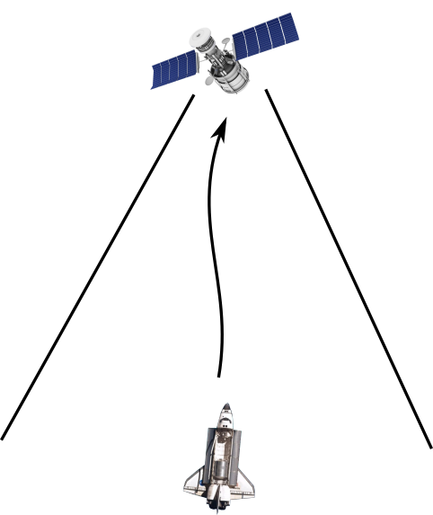
Dynamics model for the deputy relative to the chief spacecraft
The relative planar dynamics of the deputy with respect to the chief are described by the Clohessy-Wiltshire-Hill (CWH) equations,
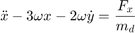
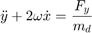
where the position of the deputy relative to the chief is 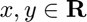, 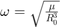 is the orbital frequency, 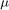 is the gravitational constant, and 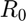 is the orbital radius of the chief spacecraft. We define the state as ![$\overline{x} = {[x\ y\ \dot{x}\ \dot{y}]}^\top \in \mathbf{R}^{4}$](cwhSReachSet_eq10872751811371042055.png) which is the position and velocity of the deputy relative to the chief along 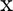- and 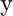- axes, and the input as 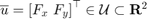.
which is the position and velocity of the deputy relative to the chief along 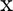- and 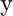- axes, and the input as 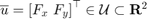.
We will discretize the CWH dynamics in time, via zero-order hold, to obtain the discrete-time linear time-invariant system and add a Gaussian disturbance to account for the modeling uncertainties and the disturbance forces,
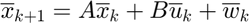
with 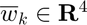 as an IID Gaussian zero-mean random process with a known covariance matrix  .
.
umax = 0.1; mean_disturbance = zeros(4,1); covariance_disturbance = diag([1e-4, 1e-4, 5e-8, 5e-8]); % Define the CWH (planar) dynamics of the deputy spacecraft relative to the % chief spacecraft as a LtiSystem object sys = getCwhLtiSystem(4, Polyhedron('lb', -umax*ones(2,1), ... 'ub', umax*ones(2,1)), ... RandomVector('Gaussian', mean_disturbance,covariance_disturbance));
Target tube construction --- reach-avoid specification
We define the target tube to be a collection of time-varying boxes 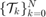 where  is the time horizon.
is the time horizon.
In this problem, we define  to be line-of-sight cone originating from origin (location of the chief spacecraft) for 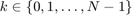 and the terminal target set
to be line-of-sight cone originating from origin (location of the chief spacecraft) for 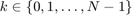 and the terminal target set  as a box around the origin. This special sequence of target sets allows us to impose a reach-avoid specification of safety.
as a box around the origin. This special sequence of target sets allows us to impose a reach-avoid specification of safety.
time_horizon = 5; % Stay within a line of sight cone for 4 time steps and % reach the target at t=5% Safe Set --- LoS cone % Safe set definition --- LoS cone |x|<=y and y\in[0,ymax] and |vx|<=vxmax and % |vy|<=vymax ymax = 2; vxmax = 0.5; vymax = 0.5; A_safe_set = [1, 1, 0, 0; -1, 1, 0, 0; 0, -1, 0, 0; 0, 0, 1,0; 0, 0,-1,0; 0, 0, 0,1; 0, 0, 0,-1]; b_safe_set = [0; 0; ymax; vxmax; vxmax; vymax; vymax]; safe_set = Polyhedron(A_safe_set, b_safe_set); % Target set --- Box [-0.1,0.1]x[-0.1,0]x[-0.01,0.01]x[-0.01,0.01] target_set = Polyhedron('lb', [-0.1; -0.1; -0.01; -0.01], ... 'ub', [0.1; 0; 0.01; 0.01]); target_tube = Tube('reach-avoid',safe_set, target_set, time_horizon);
Preparation for set computation
% Specify restrictions on the initial velocity slice_at_vx_vy = zeros(2,1); init_safe_set_affine = Polyhedron('He',[zeros(2,2) eye(2,2) slice_at_vx_vy]); prob_thresh = 0.8; % Direction vectors for Fourier transform approach n_dir_vecs = 15; theta_vec = linspace(0, 2*pi, n_dir_vecs); set_of_dir_vecs_ft = [cos(theta_vec); sin(theta_vec); zeros(2,n_dir_vecs)]; % Direction vectors for chance-constrained approach n_dir_vecs = 40; theta_vec = linspace(0, 2*pi, n_dir_vecs); set_of_dir_vecs_cc_open = [cos(theta_vec); sin(theta_vec); zeros(2,n_dir_vecs)]; % THIS SCRIPT ONLY --- Flags that enable running specific components ft_run = 1; cc_open_run = 1; lagunder_run = 1; lagover_run = 0;
Verification via SReachSet
These approaches utilizes the convexity and compactness guarantees of the stochastic reach set to the problem of stochastic reachability of a target tube as discussed in
- A. Vinod and M. Oishi, "Scalable underapproximative verification of stochastic LTI systems using convexity and compactness," In Proc. Hybrid Syst.: Comput. & Ctrl., pages 1--10, 2018. HSCC 2018
- A. Vinod and M. Oishi, "Stochastic reachability of a target tube: Theory and computation," IEEE Transactions in Automatic Control, 2018 (submitted) https://arxiv.org/pdf/1810.05217.pdf.
The three different approaches explored in this example are
- Chance-constrained open-loop-based verification (Linear program approach)
- Genz's algorithm+MATLAB's patternsearch+open-loop-based verification
- Lagrangian-based underapproximation
While the first two methods use ray-shooting and SReachPoint to compute a polytopic underapproximation, the third approach utilizes Lagrangian-based underapproximation as described in
- J. D. Gleason, A. P. Vinod, M. M. K. Oishi, "Underapproximation of Reach-Avoid Sets for Discrete-Time Stochastic Systems via Lagrangian Methods," in Proceedings of the IEEE Conference on Decision and Control, 2017.
% Convex chance constrained-based underapproximation if cc_open_run cc_options = SReachSetOptions('term', 'chance-open', ... 'set_of_dir_vecs', set_of_dir_vecs_cc_open, ... 'init_safe_set_affine', init_safe_set_affine, ... 'verbose', 1); timer_cc_open = tic; [polytope_cc_open, extra_info] = SReachSet('term','chance-open', sys, ... prob_thresh, target_tube, cc_options); elapsed_time_cc_open = toc(timer_cc_open); end
Maximum reach probability: 0.87 Computing the polytope via a maximally safe initial state Analyzing direction : 40/ 40 Computing the polytope via the Chebyshev center Analyzing direction : 40/ 40
% Genz's algorithm + Patternsearch-based underapproximation if ft_run ft_options = SReachSetOptions('term', 'genzps-open', ... 'set_of_dir_vecs', set_of_dir_vecs_ft, ... 'init_safe_set_affine', init_safe_set_affine, 'verbose', 1, ... 'desired_accuracy', 5e-2); timer_ft = tic; polytope_ft = SReachSet('term','genzps-open', sys, prob_thresh, ... target_tube, ft_options); elapsed_time_ft = toc(timer_ft); end
Compute an underapproximation of the set using chance constraints (SReachSetCcO) Maximum reach probability: 0.87 Computing the polytope via a maximally safe initial state Analyzing direction : 15/ 15 Computing the polytope via the Chebyshev center Analyzing direction : 15/ 15 Compute an initial guess for the xmax Compute the xmax via patternsearch Polytopic underapproximation exists for alpha = 0.80 since W(x_max) = 0.850. Analyzing direction : 1/15 | Theta --- lower bound: 0.64 | upper bound: 0.64 Analyzing direction : 2/15 | Theta --- lower bound: 0.48 | upper bound: 0.48 Analyzing direction : 3/15 | Theta --- lower bound: 0.46 | upper bound: 0.46 Analyzing direction : 4/15 | Theta --- lower bound: 0.53 | upper bound: 0.54 Analyzing direction : 5/15 | Theta --- lower bound: 0.51 | upper bound: 0.54 OptRAProb | OptTheta | LB_theta | UB_theta | OptInp^2 | Exit reason 0.8000 | 5.23e-01 | 5.08e-01 | 5.38e-01 | 7.81e-02 | Feasible 0.8000 | 5.31e-01 | 5.23e-01 | 5.38e-01 | 7.76e-02 | Feasible Analyzing direction : 6/15 | Theta --- lower bound: 0.46 | upper bound: 0.46 Analyzing direction : 7/15 | Theta --- lower bound: 0.48 | upper bound: 0.48 Analyzing direction : 8/15 | Theta --- lower bound: 0.64 | upper bound: 0.64 Analyzing direction : 9/15 | Theta --- lower bound: 1.29 | upper bound: 1.38 OptRAProb | OptTheta | LB_theta | UB_theta | OptInp^2 | Exit reason 0.8432 | 1.29e+00 | 1.29e+00 | 1.38e+00 | 8.84e-02 | Infeasible (0.750) 0.8000 | 1.32e+00 | 1.29e+00 | 1.34e+00 | 8.92e-02 | Feasible 0.8000 | 1.33e+00 | 1.32e+00 | 1.34e+00 | 8.95e-02 | Feasible 0.8000 | 1.33e+00 | 1.33e+00 | 1.34e+00 | 8.96e-02 | Feasible Analyzing direction :10/15 | Theta --- lower bound: 0.81 | upper bound: 1.73 OptRAProb | OptTheta | LB_theta | UB_theta | OptInp^2 | Exit reason 0.8000 | 8.14e-01 | 8.14e-01 | 1.73e+00 | 8.16e-02 | Infeasible (0.050) 0.8000 | 8.14e-01 | 8.14e-01 | 1.27e+00 | 8.16e-02 | Infeasible (0.050) 0.8000 | 8.14e-01 | 8.14e-01 | 1.04e+00 | 8.16e-02 | Infeasible (0.050) 0.8000 | 8.14e-01 | 8.14e-01 | 9.29e-01 | 8.16e-02 | Infeasible (0.500) 0.8000 | 8.14e-01 | 8.14e-01 | 8.72e-01 | 8.16e-02 | Infeasible (0.700) 0.8000 | 8.14e-01 | 8.14e-01 | 8.43e-01 | 8.16e-02 | Infeasible (0.750) 0.8000 | 8.21e-01 | 8.14e-01 | 8.28e-01 | 8.17e-02 | Feasible Analyzing direction :11/15 | Theta --- lower bound: 0.67 | upper bound: 1.39 OptRAProb | OptTheta | LB_theta | UB_theta | OptInp^2 | Exit reason 0.8001 | 6.67e-01 | 6.67e-01 | 1.39e+00 | 7.62e-02 | Infeasible (0.050) 0.8001 | 6.67e-01 | 6.67e-01 | 1.03e+00 | 7.62e-02 | Infeasible (0.050) 0.8001 | 6.67e-01 | 6.67e-01 | 8.48e-01 | 7.62e-02 | Infeasible (0.050) 0.8001 | 6.67e-01 | 6.67e-01 | 7.57e-01 | 7.62e-02 | Infeasible (0.500) 0.8001 | 6.67e-01 | 6.67e-01 | 7.12e-01 | 7.62e-02 | Infeasible (0.700) 0.8001 | 6.67e-01 | 6.67e-01 | 6.90e-01 | 7.62e-02 | Infeasible (0.750) 0.8000 | 6.73e-01 | 6.67e-01 | 6.78e-01 | 7.61e-02 | Feasible Analyzing direction :12/15 | Theta --- lower bound: 0.67 | upper bound: 1.39 OptRAProb | OptTheta | LB_theta | UB_theta | OptInp^2 | Exit reason 0.8013 | 6.73e-01 | 6.73e-01 | 1.39e+00 | 7.79e-02 | Infeasible (0.050) 0.8013 | 6.73e-01 | 6.73e-01 | 1.03e+00 | 7.79e-02 | Infeasible (0.050) 0.8013 | 6.73e-01 | 6.73e-01 | 8.52e-01 | 7.79e-02 | Infeasible (0.050) 0.8013 | 6.73e-01 | 6.73e-01 | 7.63e-01 | 7.79e-02 | Infeasible (0.450) 0.8013 | 6.73e-01 | 6.73e-01 | 7.18e-01 | 7.79e-02 | Infeasible (0.700) 0.8013 | 6.73e-01 | 6.73e-01 | 6.95e-01 | 7.79e-02 | Infeasible (0.750) 0.8000 | 6.79e-01 | 6.73e-01 | 6.84e-01 | 7.79e-02 | Feasible Analyzing direction :13/15 | Theta --- lower bound: 0.83 | upper bound: 1.73 OptRAProb | OptTheta | LB_theta | UB_theta | OptInp^2 | Exit reason 0.8444 | 8.28e-01 | 8.28e-01 | 1.73e+00 | 8.96e-02 | Infeasible (0.050) 0.8444 | 8.28e-01 | 8.28e-01 | 1.28e+00 | 8.96e-02 | Infeasible (0.050) 0.8444 | 8.28e-01 | 8.28e-01 | 1.05e+00 | 8.96e-02 | Infeasible (0.050) 0.8444 | 8.28e-01 | 8.28e-01 | 9.41e-01 | 8.96e-02 | Infeasible (0.600) 0.8000 | 8.56e-01 | 8.28e-01 | 8.85e-01 | 8.87e-02 | Feasible 0.8000 | 8.56e-01 | 8.56e-01 | 8.85e-01 | 8.87e-02 | Infeasible (0.700) 0.8000 | 8.56e-01 | 8.56e-01 | 8.70e-01 | 8.87e-02 | Infeasible (0.750) Analyzing direction :14/15 | Theta --- lower bound: 1.07 | upper bound: 1.38 OptRAProb | OptTheta | LB_theta | UB_theta | OptInp^2 | Exit reason 0.8000 | 1.23e+00 | 1.07e+00 | 1.38e+00 | 8.56e-02 | Feasible 0.8000 | 1.23e+00 | 1.23e+00 | 1.38e+00 | 8.56e-02 | Infeasible (0.750) 0.8000 | 1.27e+00 | 1.23e+00 | 1.30e+00 | 8.40e-02 | Feasible 0.8000 | 1.28e+00 | 1.27e+00 | 1.30e+00 | 8.36e-02 | Feasible 0.8000 | 1.28e+00 | 1.28e+00 | 1.30e+00 | 8.36e-02 | Infeasible (0.750) Analyzing direction :15/15 | Theta --- lower bound: 0.64 | upper bound: 0.64
% Lagrangian-based underapproximation if lagunder_run n_dim = sys.state_dim + sys.input_dim; lagunder_options = SReachSetOptions('term', 'lag-under',... 'bound_set_method', 'ellipsoid', 'compute_style','support',... 'system', sys, 'vf_enum_method', 'lrs', 'verbose', 2,... 'n_vertices', 2^n_dim * 6 + 2*n_dim); timer_lagunder = tic; [polytope_lagunder, extra_info_under] = SReachSet('term', 'lag-under', ... sys, prob_thresh, target_tube, lagunder_options); elapsed_time_lagunder = toc(timer_lagunder); end
Spreading 396 unit-length vectors in 6-dim space Analyzing 6 unit-length vectors in first quadrant 1. Setting up the CVX problem... 1 | 2 | 3 | 4 | 5 | 6 | Solving the CVX problem...done Status: Solved Sum of slack: 1.161e-10 (< 1.000e-08) Change in opt cost: 4.598e-01 (< 1.000e-05) 2. Setting up the CVX problem... 1 | 2 | 3 | 4 | 5 | 6 | Solving the CVX problem...done Status: Solved Sum of slack: 1.998e-10 (< 1.000e-08) Change in opt cost: 6.917e-02 (< 1.000e-05) 3. Setting up the CVX problem... 1 | 2 | 3 | 4 | 5 | 6 | Solving the CVX problem...done Status: Solved Sum of slack: 6.152e-11 (< 1.000e-08) Change in opt cost: 6.162e-02 (< 1.000e-05) 4. Setting up the CVX problem... 1 | 2 | 3 | 4 | 5 | 6 | Solving the CVX problem...done Status: Solved Sum of slack: 5.094e-10 (< 1.000e-08) Change in opt cost: 1.673e-02 (< 1.000e-05) 5. Setting up the CVX problem... 1 | 2 | 3 | 4 | 5 | 6 | Solving the CVX problem...done Status: Solved Sum of slack: 1.135e-09 (< 1.000e-08) Change in opt cost: 4.048e-04 (< 1.000e-05) 6. Setting up the CVX problem... 1 | 2 | 3 | 4 | 5 | 6 | Solving the CVX problem...done Status: Solved Sum of slack: 2.593e-12 (< 1.000e-08) Change in opt cost: 2.324e-07 (< 1.000e-05) Completed spreading the vectors! Time to spread the vectors: 14.571 s Computing Lagragian under approximation Time_horizon: 5 Computation for time step: 4 Time to setup x_u_reaches_target_set: 0.006 s Time for MVE computation : 0.499 s Time to get v-rep underapprox.: 0.060 s Time to get minimal v-rep : 1.942 s Time to get inner min. H-rep : 2.065 s Time for oneStepBack: 4.581 s Computation for time step: 3 Time to setup x_u_reaches_target_set: 0.005 s Time for MVE computation : 1.733 s Time to get v-rep underapprox.: 0.034 s Time to get minimal v-rep : 2.029 s Time to get inner min. H-rep : 1.828 s Time for oneStepBack: 5.654 s Computation for time step: 2 Time to setup x_u_reaches_target_set: 0.003 s Time for MVE computation : 1.947 s Time to get v-rep underapprox.: 0.035 s Time to get minimal v-rep : 2.165 s Time to get inner min. H-rep : 2.302 s Time for oneStepBack: 6.482 s Computation for time step: 1 Time to setup x_u_reaches_target_set: 0.004 s Time for MVE computation : 1.812 s Time to get v-rep underapprox.: 0.036 s Time to get minimal v-rep : 2.280 s Time to get inner min. H-rep : 2.391 s Time for oneStepBack: 6.553 s Computation for time step: 0 Time to setup x_u_reaches_target_set: 0.006 s Time for MVE computation : 1.967 s Time to get v-rep underapprox.: 0.033 s Time to get minimal v-rep : 2.195 s Time to get inner min. H-rep : 2.325 s Time for oneStepBack: 6.559 s
% Lagrangian-based overapproximation if lagover_run n_dim = sys.state_dim; lagover_options = SReachSetOptions('term', 'lag-over', ... 'bound_set_method', 'ellipsoid', 'compute_style','support', ... 'system', sys, 'vf_enum_method', 'lrs', 'verbose', 1, ... 'n_vertices', 2^n_dim * 6 + 2*n_dim); timer_lagover = tic; polytope_lagover = SReachSet('term', 'lag-over', sys, prob_thresh, ... target_tube, lagover_options); elapsed_time_lagover = toc(timer_lagover); end
Plotting the sets
figure(101); clf box on; hold on; plot(safe_set.slice([3,4], slice_at_vx_vy), 'color', 'y'); plot(target_set.slice([3,4], slice_at_vx_vy), 'color', 'g'); legend_cell = {'Safe set','Target set'}; if cc_open_run && ~isEmptySet(polytope_cc_open) % Since we specify the init_safe_set (polytope is already intersected by % the constant vx and vy at t=0), we can simply throw out the % states 3 and 4 to get the 2D set plot(Polyhedron('V',polytope_cc_open.V(:,1:2)), 'color','k','alpha',0.5); legend_cell{end+1} = 'Underapprox. polytope (chance-open)'; else polytope_cc_open = Polyhedron(); elapsed_time_cc_open = NaN; end if ft_run && ~isEmptySet(polytope_ft) % Since we specify the init_safe_set (polytope is already intersected by % the constant vx and vy at t=0), we can simply throw out the % states 3 and 4 to get the 2D set plot(Polyhedron('V',polytope_ft.V(:,1:2)), 'color','b','alpha',0.5); legend_cell{end+1} = 'Underapprox. polytope (genzps-open)'; else polytope_ft = Polyhedron(); elapsed_time_ft = NaN; end if lagunder_run && ~isEmptySet(polytope_lagunder) % Since we specify the init_safe_set (polytope is already intersected by % the constant vx and vy at t=0), we can simply throw out the % states 3 and 4 to get the 2D set plot(polytope_lagunder.slice([3,4], slice_at_vx_vy), 'color','r','alpha',1); legend_cell{end+1} = 'Underapprox. polytope (lag-under)'; else polytope_lagunder = Polyhedron(); elapsed_time_lagunder = NaN; end if lagover_run && ~isEmptySet(polytope_lagover) plot(polytope_lagover.slice([3,4], slice_at_vx_vy), 'color','m','alpha',1); legend_cell{end+1} = 'Overapprox. polytope (lag-over)'; else polytope_lagover = Polyhedron(); elapsed_time_lagover = NaN; end

Monte-Carlo based validation of the optimal controller
% Monte-Carlo simulation parameters n_mcarlo_sims = 1e5; n_sims_to_plot = 5; direction_index_to_plot = 30; if ~isEmptySet(polytope_cc_open) init_state = extra_info(2).vertices_underapprox_polytope(:,direction_index_to_plot); input_vec = extra_info(2).opt_input_vec_at_vertices(:,direction_index_to_plot); opt_reach_avoid = extra_info(2).opt_reach_prob_i(direction_index_to_plot); concat_state_realization = generateMonteCarloSims(... n_mcarlo_sims, ... sys, ... init_state, ... time_horizon, ... input_vec); % Check if the location is within the target_set or not mcarlo_result = target_tube.contains(concat_state_realization); [legend_cell] = plotMonteCarlo(' (chance-open)', mcarlo_result, ... concat_state_realization, n_mcarlo_sims, n_sims_to_plot, ... sys.state_dim, init_state, legend_cell); fprintf('Expected probability: %1.3f, Simulated probability: %1.3f\n',... opt_reach_avoid, sum(mcarlo_result)/n_mcarlo_sims); end legend(legend_cell, 'Location','South'); xlabel('$x$','interpreter','latex'); ylabel('$y$','interpreter','latex'); if any(isnan([elapsed_time_ft, elapsed_time_cc_open, elapsed_time_lagunder])) disp('Skipped items would show up as NaN'); end fprintf(['Elapsed time: (genzps-open) %1.3f | (chance-open) %1.3f',... ' | (lag-under) %1.3f | (lag-over) %1.3f seconds\n'], ... elapsed_time_ft, elapsed_time_cc_open, elapsed_time_lagunder,... elapsed_time_lagover);
A helper function to plot a subset of the Monte-Carlo simulations
function [legend_cell] = plotMonteCarlo(method_str, mcarlo_result, ... concat_state_realization, n_mcarlo_sims, n_sims_to_plot, state_dim, ... initial_state, legend_cell) % Plots a selection of Monte-Carlo simulations on top of the plot green_legend_updated = 0; red_legend_updated = 0; traj_indices = floor(n_mcarlo_sims*rand(1,n_sims_to_plot)); for realization_index = traj_indices % Check if the trajectory satisfies the reach-avoid objective if mcarlo_result(realization_index) % Assign green triangle as the marker markerString = 'g^-'; else % Assign red asterisk as the marker markerString = 'r*-'; end % Create [x(t_1) x(t_2)... x(t_N)] reshaped_X_vector = reshape(... concat_state_realization(:,realization_index), state_dim,[]); % This realization is to be plotted h = plot([initial_state(1), reshaped_X_vector(1,:)], ... [initial_state(2), reshaped_X_vector(2,:)], ... markerString, 'MarkerSize',10); % Update the legends if the first else, disable if strcmp(markerString,'g^-') if green_legend_updated h.Annotation.LegendInformation.IconDisplayStyle = 'off'; else green_legend_updated = 1; legend_cell{end+1} = strcat('Good trajectory ', method_str); end elseif strcmp(markerString,'r*-') if red_legend_updated h.Annotation.LegendInformation.IconDisplayStyle = 'off'; else red_legend_updated = 1; legend_cell{end+1} = strcat('Bad trajectory ', method_str); end end end end
Expected probability: 0.800, Simulated probability: 0.812 Elapsed time: (genzps-open) 520.066 | (chance-open) 24.184 | (lag-under) 29.862 | (lag-over) NaN seconds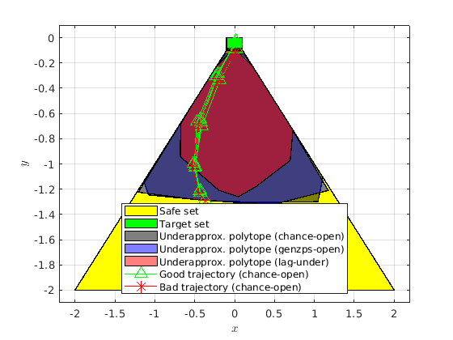